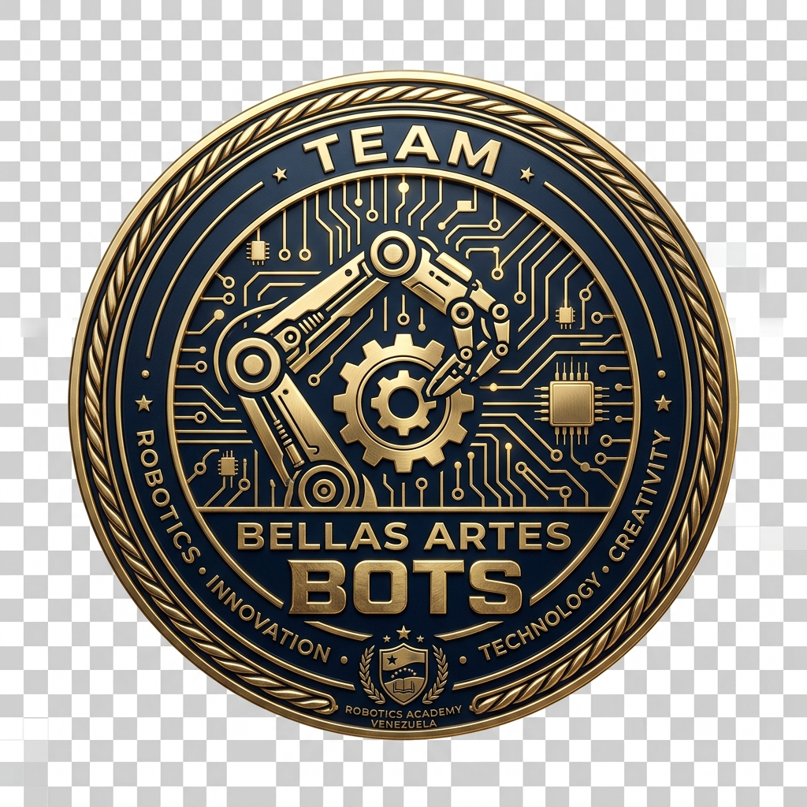
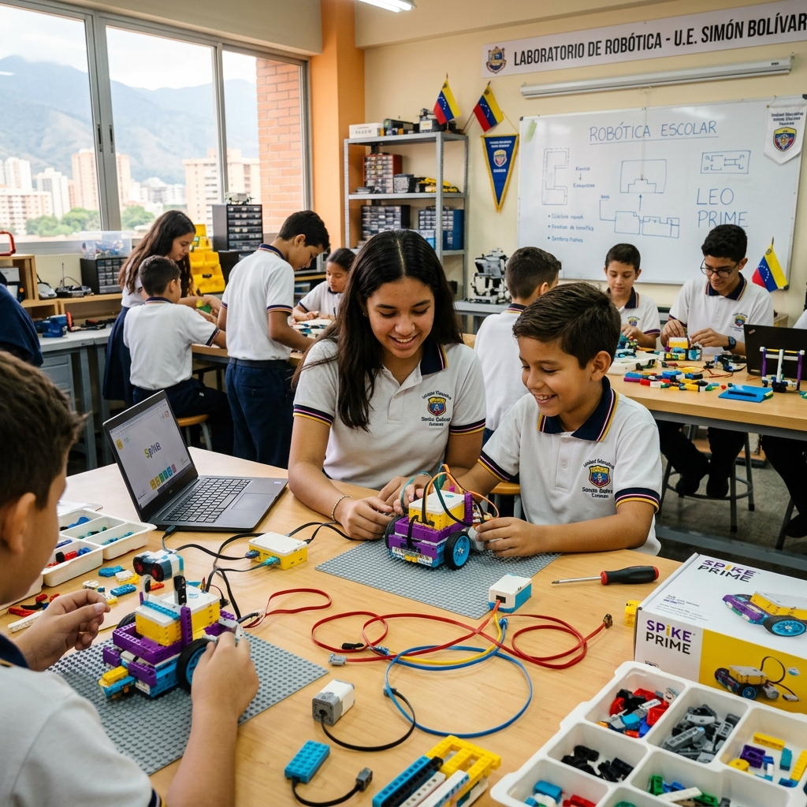
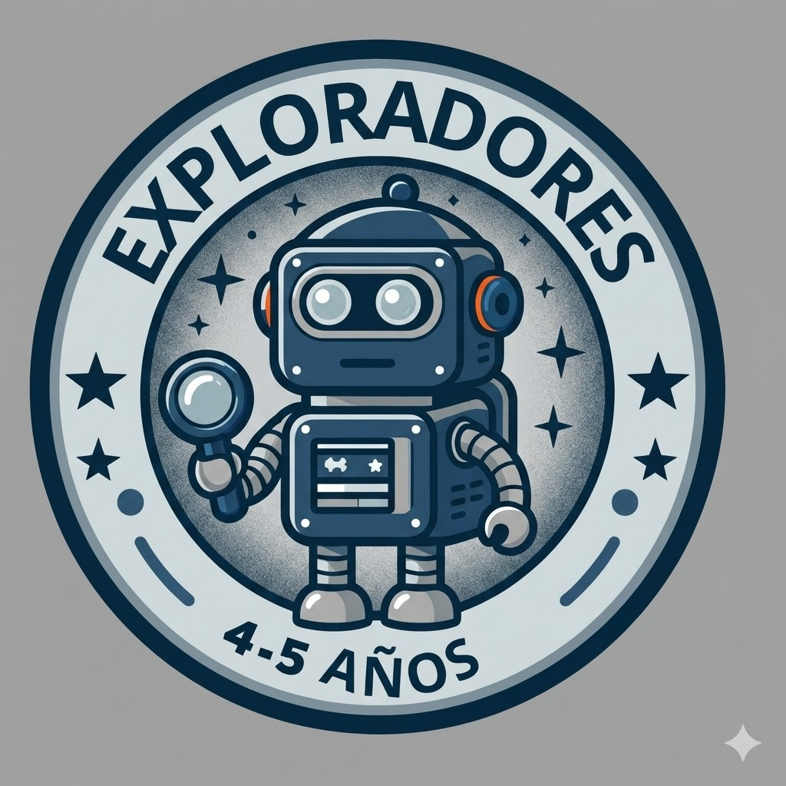
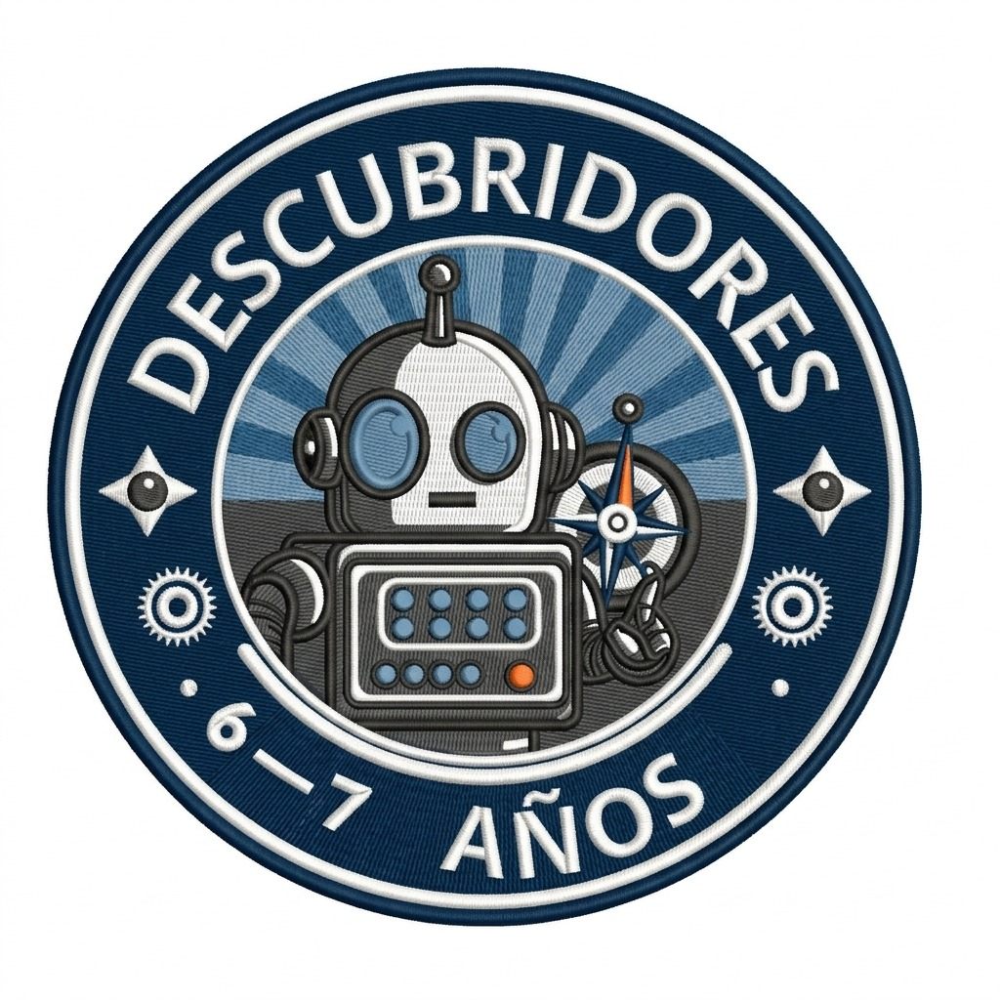
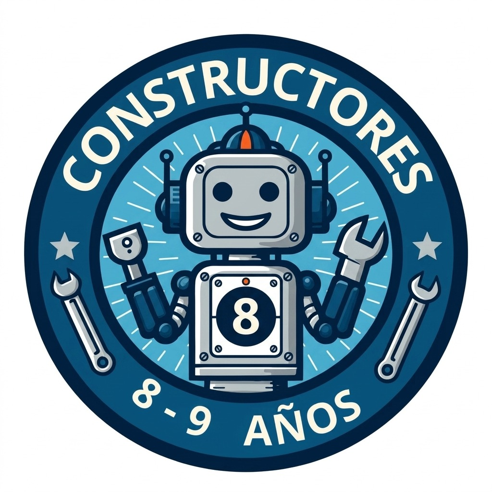
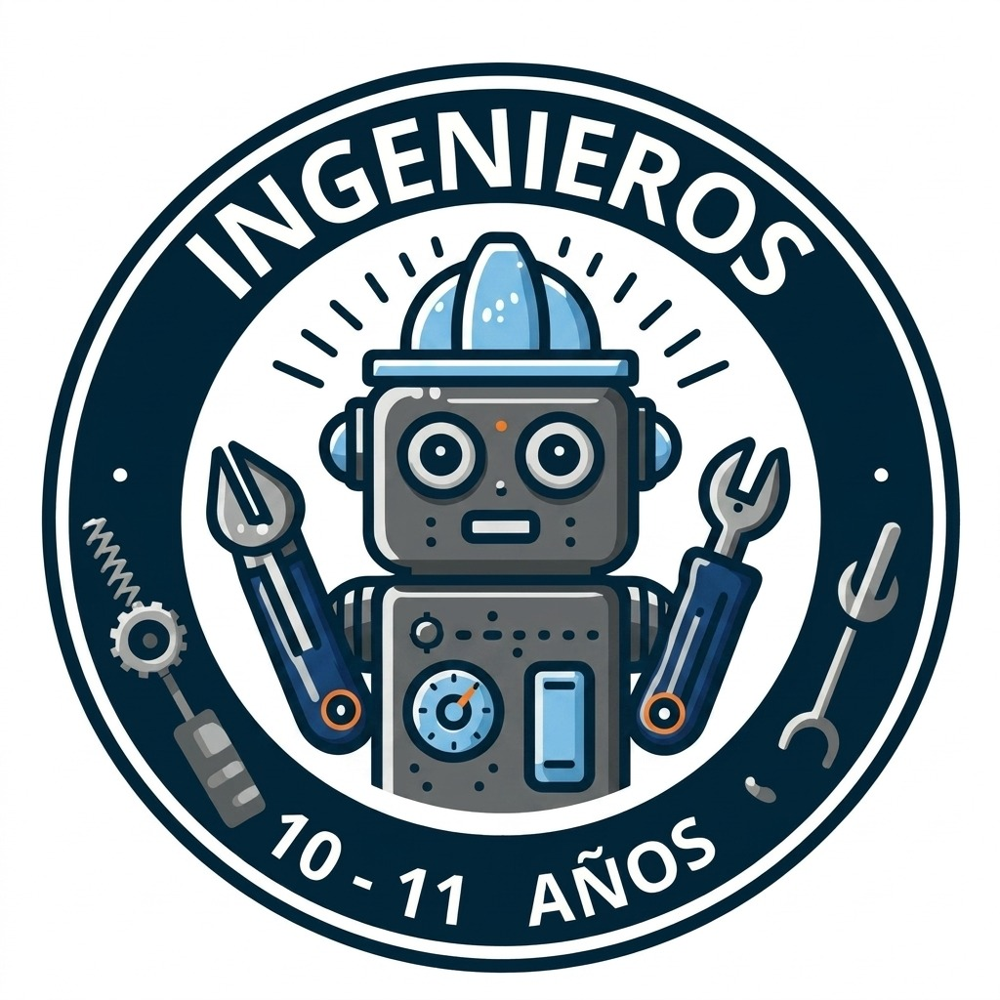
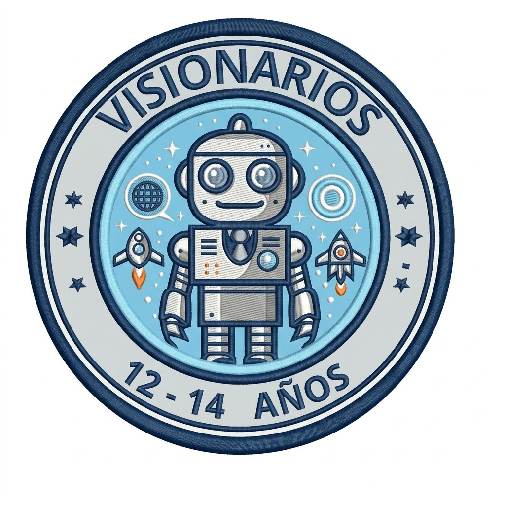
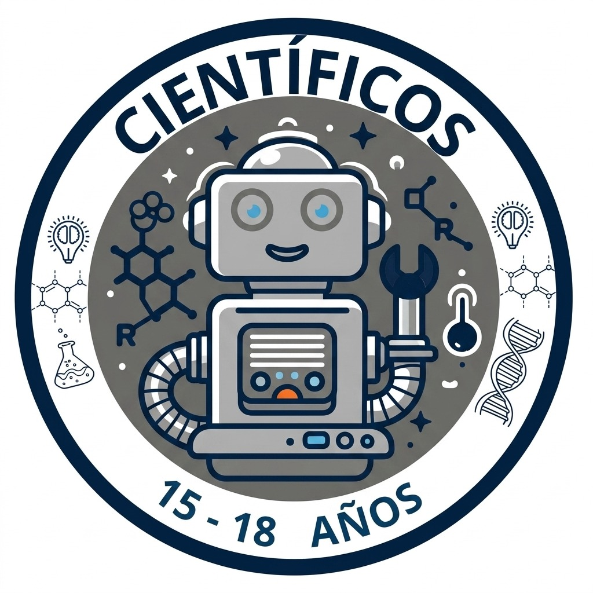
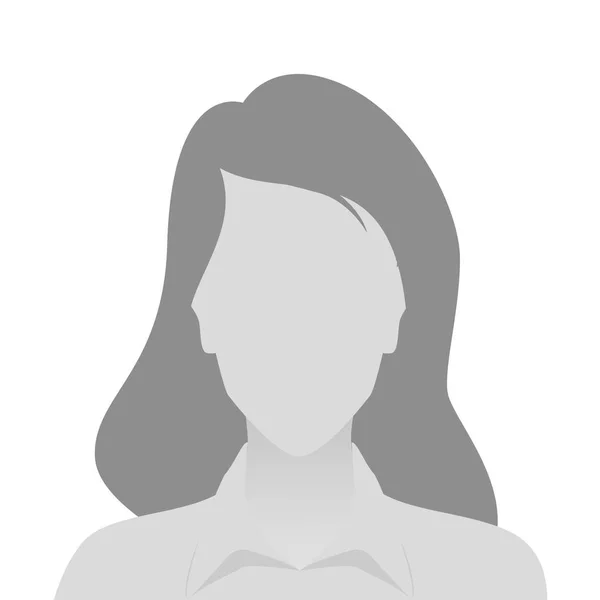

"Programa tu mundo, construye tu futuro."
Un equipo multidisciplinario de especialistas en educación tecnológica e ingeniería, comprometidos con la excelencia académica del Colegio Bellas Artes.
Somos una Academia de Robótica y Programación de Alto Rendimiento conformada por un equipo multidisciplinario de especialistas en ingeniería y educación tecnológica. Con sede en el Colegio Bellas Artes de Maracaibo, fusionamos la lógica computacional con la construcción mecánica y la creatividad artística. Contamos con docentes expertos en logística, construcción LEGO, programación avanzada y coaching para competencias internacionales.
Formamos niños y jóvenes, a partir de los 4 años, en el dominio de las tecnologías emergentes.
Usamos la robótica y la programación para potenciar el pensamiento crítico, la resolución de problemas y el trabajo colaborativo.
Democratizamos el acceso a la educación en Ciencia, Tecnología, Ingeniería, Arte y Matemáticas.
Garantizamos un ambiente seguro, moderno y alineado con los estándares globales de competencia tecnológica.
Convertirnos en la academia de robótica de referencia en el estado Zulia y en toda Venezuela, destacando por la excelencia de nuestros equipos en encuentros nacionales e internacionales. Aspiramos a ser un centro de innovación donde los estudiantes evolucionen desde la construcción manual básica hasta el desarrollo de algoritmos complejos, adquiriendo las competencias necesarias para liderar la transformación digital del futuro.
Una progresión diseñada cuidadosamente para acompañar el desarrollo cognitivo de cada estudiante desde la primera infancia hasta la competencia internacional.

Iniciación Tecnológica

Pensamiento Algorítmico

Hardware Avanzado y WRO

Alta Especialización

Arquitectura y Python

I+D e IA Profesional
Especialistas apasionados que combinan experiencia pedagógica con conocimiento técnico de vanguardia.

🔧 Construcción Mecánica y Logística
Especialista en construcción mecánica con K-Nex y LEGO. Coordina la logística del laboratorio y los recursos didácticos de la academia.
💻 Programación y Bases Teóricas
Docente de programación con dominio de Scratch, Micro:bit y fundamentos de pensamiento computacional. Diseña el currículo teórico de cada nivel.
🏆 Dirección Técnica · ⚙️ Programación WRO
Director técnico del equipo de alto rendimiento y especialista en Python con LEGO Spike Prime. Lidera la estrategia competitiva y el desarrollo de código para la World Robot Olympiad.
Transparencia total en costos y horarios. Invierte en el futuro tecnológico de tu hijo.